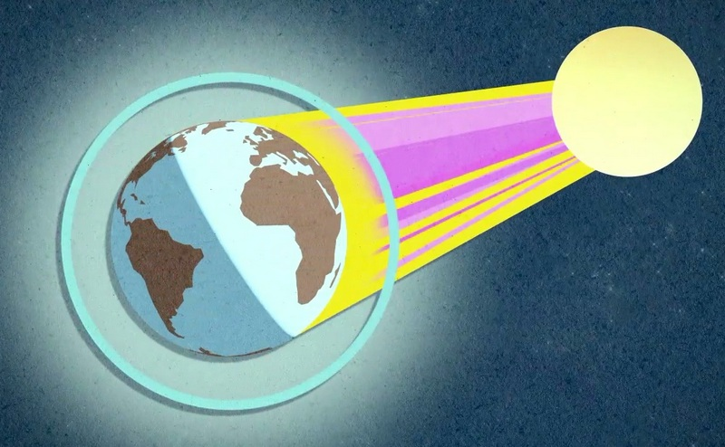

Озоновый слой в атмосфере является чем-то вроде "большого одеяла", которое накрывает нашу планету и защищает её от УФ(ультрафиолетового) излучения. Многочисленные пожары, химические удобрения, выбросы вредных производственных веществ в атмосферу приводят к разрушению нашего защитного щита, что влечёт за собой серьёзные последствия для человека и всей жизни на земле.
Опасность УФ излучения
Ультрафиолетовое излучение разделено на 3 подтипа:
- УФ-A(400—315нм) - провоцирует загар человеческой кожи;
- УФ-B(315—280нм) - вызывает выработку витамина D;
- УФ-C(280—100нм) - вызывает образование злокачественных раковых опухолей.
Именно УФ-C способен уничтожить жизнь на земле, но к счастью он почти полностью задерживается в атмосфере озоновым слоем.
Разрушение озонового слоя
Когда на проблему обратили внимание, учёные стали искать возможные причины истончения озонового слоя. Позже выяснилось, что разрушение нашего щита вызывают такие соединения, как фреоны. Их область применения огромна и охватывает почти всю жизнедеятельность человека. При попадании фреонов в атмосферу, под действием УФ излучения они разлагаются и активно разрушают молекулы озона. На озоновый слой влияют и химические удобрения. В результате взаимодействия бактерий земли с бактериями удобрения образуется закись азота, поднимающаяся в атмосферу. Так же его истончают глобальные лесные пожары, в результате выбросов продуктов горения в атмосферу.
Озоновая дыра над Антарктидой
В 1985 году на Южном полушарии над Антарктидой была обнаружена первая и самая большая озоновая дыра, которая на сегодняшний день разрослась до 20 млн квадратных километров. Было доказано, что из-за долгих ночей в Антарктиде образовывалось недостаточное количество озона, а из-за отсутствия солнечных лучей стали формироваться хлористые облака, которые так же оказывают разрушительные действия на озон.
Новая угроза
Космический туризм становится одной из новых опасностей для озонового слоя. Крупные компании, а также целые государства стремятся наладить специальные системы по обеспечению регулярных космических путешествий, что является серьёзной угрозой. Ими движет лишь желание создать фурор в области коммерческих путешествий, о безопасности конечно никто задумываться не собирается. Такие регулярные полеты приведут к разрушению озонового слоя, так как высокая температура, а так же продукты сгорания будут негативно влиять на озоновый слой, что может вызвать его истончение.
Озоновый слой сегодня
Ниже находится карта озонового слоя за последние сутки.
Данные получены из: